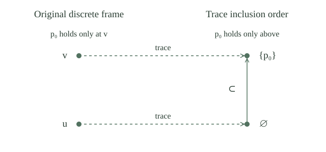

Let \(M=(W,\leq,V)\) be a nonempty preordered Kripke model for the shared formulas with numbered atoms \(p_0,p_1,\ldots\), including native negation. A tracked set is a finite subformula-closed set \(\Sigma\) of these formulas: whenever \(A\in\Sigma\), every member of \(\operatorname{Sub}(A)\) also belongs to \(\Sigma\). Use the previously defined native subformula sets.
In particular, a tracked negation brings its argument, and a tracked binary connective brings both arguments. For finite premises \(\Gamma\) and conclusion \(A\), the set \(\Sigma(\Gamma,A)\) defined there is a tracked set containing every premise and the conclusion. No finiteness assumption is made on \(W\).
The forcing trace of \(w\in W\) is the finite set
The realized trace worlds and their order are
A trace world is the subset itself, rather than a selected original representative. Thus \(t_\Sigma(w)=t_\Sigma(v)\) exactly when \(w\) and \(v\) agree on the forcing of every formula in \(\Sigma\). Each trace is contained in \(\Sigma\), and every trace world has at least one original representative.
For any finite \(\Sigma\), inclusion makes \(W_\Sigma\) a nonempty finite partial order, with
Subset inclusion is reflexive and transitive, and inclusions in both directions identify the same subset. An original world exists because \(M\) is nonempty; its trace supplies a trace world. Every realized trace is a subset of \(\Sigma\), so the map sending that world to the same member of the power set of \(\Sigma\) is injective. The power set has \(2^{|\Sigma|}\) members. This proves finiteness and the upper bound, while nonemptiness gives the lower bound.
The finite filtration \(M_\Sigma\) has frame \((W_\Sigma,\subseteq)\) and atom valuation
This is a persistent valuation: if \(p_i\in s\subseteq t\), then \(p_i\in t\). It is defined on every numbered atom. If \(p_i\notin\Sigma\), that atom is false at every trace world. If \(p_i\in\Sigma\), then
Consequently the definition gives an actual nonempty finite Kripke model without making a choice between original worlds that share a trace.
The specified trace map \(t_\Sigma:W\to W_\Sigma\) is surjective and monotone. Moreover, for every \(B\in\Sigma\),
Surjectivity is the definition of a realized trace. If \(w\leq v\), forcing persistence carries each tracked formula true at \(w\) to \(v\), proving monotonicity. For the last assertion, the two hypotheses put \(B\) in \(t_\Sigma(w)\), hence in \(t_\Sigma(v)\). The definition of the latter trace gives its forcing at \(v\).
The last assertion uses only trace inclusion and a tracked formula. It does not infer \(w\leq v\). The filtered order can have more comparisons than those induced by original accessibility.
For every nonempty preordered model \(M\), finite subformula-closed \(\Sigma\), original world \(w\), and \(B\in\Sigma\),
Induct on \(B\), proving the assertion simultaneously for every original world. A tracked atom has the same value by the valuation definition. Falsum is forced in neither model. For conjunction and disjunction, both children are tracked; their current-world forcing clauses and the induction hypotheses give the required equivalence.
Let \(B=C\to D\). First suppose \(M,w\Vdash C\to D\). Consider any trace \(s\supseteq t_\Sigma(w)\) forcing \(C\) in \(M_\Sigma\). Choose an original representative \(v\) of \(s\). Since the principal formula \(C\to D\) is itself tracked, trace inclusion transfers its forcing from \(w\) to \(v\). Induction changes \(M_\Sigma,s\Vdash C\) into \(M,v\Vdash C\). Apply the original implication at the reflexive extension \(v\leq v\) to obtain \(M,v\Vdash D\), and use induction again to get \(M_\Sigma,s\Vdash D\). This proves the filtered implication even when \(w\) and \(v\) are incomparable.
Conversely suppose the filtered implication is forced at \(t_\Sigma(w)\). Given any original \(v\geq w\) forcing \(C\), monotonicity makes \(t_\Sigma(v)\) a future trace. Induction supplies \(C\) there, the filtered implication supplies \(D\), and induction returns \(M,v\Vdash D\). Hence the original implication is forced.
For native \(B=\neg C\), suppose first that \(M,w\Vdash\neg C\). At any later trace, transfer the tracked principal negation to an original representative \(v\). Induction identifies a proposed filtered forcing of \(C\) with original forcing at \(v\); the transferred negation forbids that at \(v\leq v\). Thus the filtered negation is forced. In the reverse direction, any original extension \(v\geq w\) has a later trace. The filtered negation forbids \(C\) there, and induction therefore forbids original forcing of \(C\) at \(v\). These are precisely the two native negation clauses. All uses of induction concern tracked proper subformulas, so every constructor has been handled.
Let \(\Sigma\) be a tracked set containing every member of a premise set \(\Gamma\) and the conclusion \(A\). At every specified original world \(w\),
Apply the tracked truth theorem to each premise and to \(A\). It transfers all premise truths in either direction and transfers conclusion failure by the same equivalence. The point in the finite model is the trace of the supplied point, so no new counterexample world is selected.
For finite \(\Gamma\), take \(\Sigma=\Sigma(\Gamma,A)\). This recovers the earlier bounded-countermodel argument when \(M\) is the canonical model, and also applies to a supplied model with additional frame geometry.
If \(r\in W\) satisfies \(r\leq w\) for every \(w\in W\), then \(t_\Sigma(r)\) is a least world of \(W_\Sigma\).
Every trace \(s\) has a representative \(w\). The hypothesis gives \(r\leq w\), and monotonicity gives \(t_\Sigma(r)\subseteq t_\Sigma(w)=s\). Thus this exact trace lies below every trace world.
A preorder is globally directed if every pair \(u,v\) has a common upper world \(z\), with \(u\leq z\) and \(v\leq z\). If the original frame is globally directed, then so is \(W_\Sigma\).
Given trace worlds \(s,t\), choose representatives \(u,v\). Global directedness supplies \(z\geq u,v\). Monotonicity gives \(s=t_\Sigma(u)\subseteq t_\Sigma(z)\) and \(t=t_\Sigma(v)\subseteq t_\Sigma(z)\). The trace of this actual original upper world is therefore a common upper trace.
The hypothesis concerns every original pair. Merely having directed future cones does not make arbitrary representatives of comparable traces share an original predecessor. A rooted future cone, however, is globally directed whenever that cone has directed future cones.
If the original frame is globally directed, there is a trace \(g\in W_\Sigma\) such that \(s\subseteq g\) for every trace \(s\). Thus the finite filtration has a greatest world.
The trace frame is nonempty, finite and globally directed by the preceding results. List all its worlds as \(s_1,\ldots,s_n\), with \(n\geq1\). Start with \(g_1=s_1\). Having found a common upper world \(g_k\) of the first \(k\) listed worlds, use directedness to choose a common upper world \(g_{k+1}\) of \(g_k\) and \(s_{k+1}\). Transitivity keeps it above every earlier \(s_i\). Finite induction gives \(g_n\) above every world in the list, which is the required greatest trace. Antisymmetry makes any two such greatest worlds equal.
Applied to the rooted directed canonical countermodel for weak excluded middle, this gives the finite KC countermodels needed for a bounded decision procedure.
If the original preorder is globally comparable, meaning \(u\leq v\) or \(v\leq u\) for every pair, then the trace frame is a finite chain: every two traces are comparable by inclusion. If the original frame also has a specified least world \(r\), its trace is the least point of this chain.
Choose representatives \(u,v\) for two traces. In the first comparison case monotonicity gives \(t_\Sigma(u)\subseteq t_\Sigma(v)\); in the second it gives the reverse inclusion. This proves comparability of every pair of traces. Finiteness and antisymmetry were already proved, and the least-root lemma supplies the final assertion.
Let \(W=\{u,v\}\) have the discrete order: a world sees only itself. Let \(p_0\) hold exactly at \(v\), and let every other atom be false. For the tracked set \(\Sigma=\{p_0\}\), the traces are
The singleton is subformula closed. At \(u\), its sole tracked atom is false, giving the empty trace; at \(v\) it is true, giving the singleton trace. These are the only original worlds, so these are precisely the two trace worlds. The empty set is properly included in the singleton although \(u\nleq v\). In the filtered model, \(p_0\) is false at the lower trace and true at the upper trace.

Does the specified monotone surjection \(t_\Sigma\) always satisfy the back condition?
No. In the discrete two-world model above, the upper trace \(\{p_0\}\) lies above \(t_\Sigma(u)=\varnothing\). A back witness would have to be an original \(z\geq u\) whose trace is \(\{p_0\}\). Discreteness forces \(z=u\), whose trace is empty, a contradiction.
Thus even tracking every atom that varies in this example does not make the trace map a bounded frame map. The tracked truth theorem is proved directly from the tracked principal formulas; it does not invoke bounded-morphism invariance.
In the same example, do the two models agree on \(\neg p_0\) and \(p_0\lor\neg p_0\) at the specified lower point?
No. Originally \(u\) sees only itself and does not force \(p_0\), so it forces \(\neg p_0\), and hence \(p_0\lor\neg p_0\). Its empty trace has a future trace \(\{p_0\}\) forcing \(p_0\); it therefore fails to force \(\neg p_0\). It also fails to force \(p_0\), so it fails to force their disjunction. Neither of these two composite formulas belongs to \(\Sigma\).
Every valuation on the original discrete frame validates excluded middle, since each world's future consists only of itself. The filtered chain with the specified valuation refutes it at its lower point. Preservation of tracked truth in one supplied model therefore does not imply preservation of validity for every formula under every valuation on the two frames.
Describe \(M_\varnothing\), including its size and atom values.
Every original world has the empty trace. Nonemptiness of the original frame ensures that this trace occurs, so the trace frame has exactly one world. Every atom is untracked and is false there. The bound is exact: \(|W_\varnothing|=1=2^0\). The tracked truth assertion has no formula instances; it is vacuous, rather than an assertion that all original formulas have the same value.